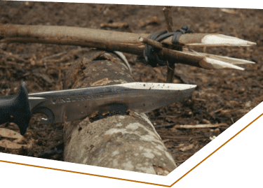
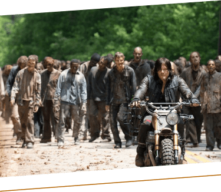
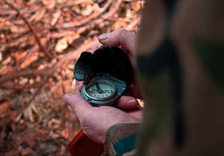

La survie
La survie, le sujet de l’augmentation
La survie c’est le fait de se maintenir en vie malgré un risque accru de mort. La survie est un élément majeur qui est présent dans le livre et dans le film. La survie dans les deux cas est bien différente. Mais celle-ci présente des similitudes telles que le fait que les individus se trouvent dans des milieux hostiles. La grande différence est le fait que d’un côté la survie se fait seule alors que l’autre côté la survie est faite en groupe. Dans les deux cas la survie est imposée pour les protagonistes.
Le réalisateur et ses objectifs
La survie c’est aussi le fait de ne pas être dans son confort habituel. Ici Glass et Philip sont tous deux menacés par le milieu sauvage où ils se trouvent. Ils sont menacés en permanence, et sont confrontés à des potentielles menaces externes.
Les conditions de vies
Glass dans le froid polaire ou bien Philip Blake entouré de morts-vivants. Les deux histoires ont le droit à leurs versions de cataclysme. Les conditions de vies sont un facteur très important dans la survie. Celles-ci déterminent l’évolution du personnage et les changements. Le corps humain n’est pas adapté à de telles conditions de vies. C’est pourquoi le comportement change radicalement.
"L'homme est un animal aux instincts de survie primitifs : son ingéniosité s'est donc développée d'abord, et son âme ensuite" - Charlie Chaplin
Comportement devenu sauvage
Le survivalisme est une réponse animale basée sur les conséquences d’un cataclysme. Dans le cas de Glass ou bien de Philip Blake, le comportement devient sauvage. A travers ces deux histoires, on assiste à l’évolution du comportement. Un comportement humain est vite changé par la solitude et les conditions de vies. On peut assister à un retour à la nature, une animalisation des personnages. Tout au long des deux histoires on a le droit à des actes complètement sauvages.